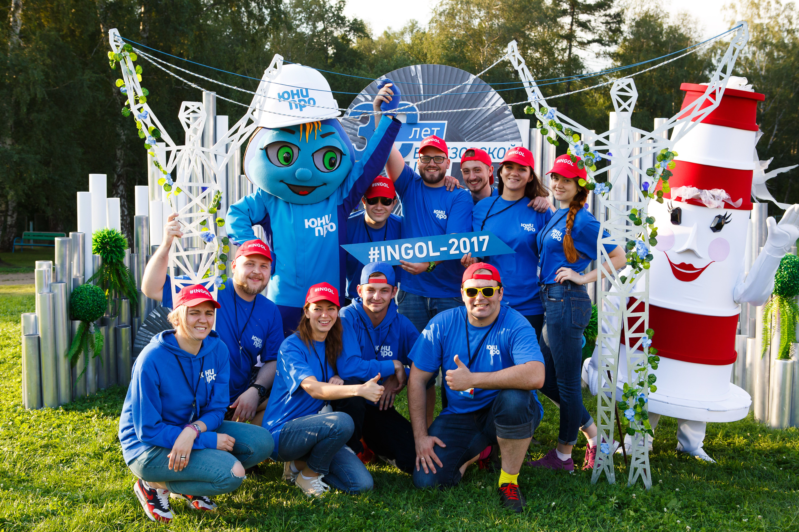
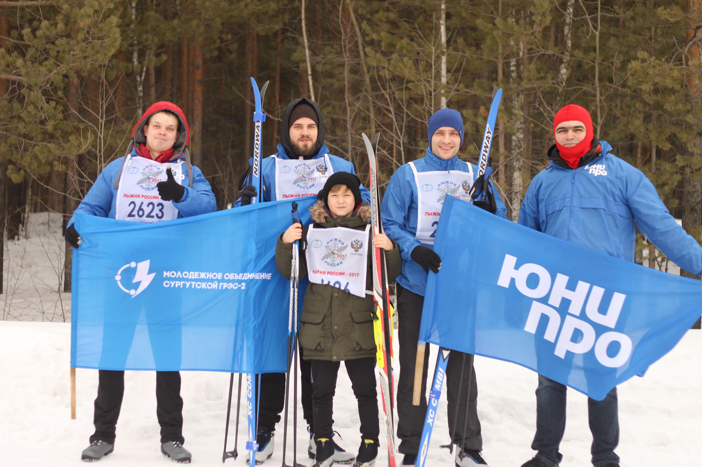
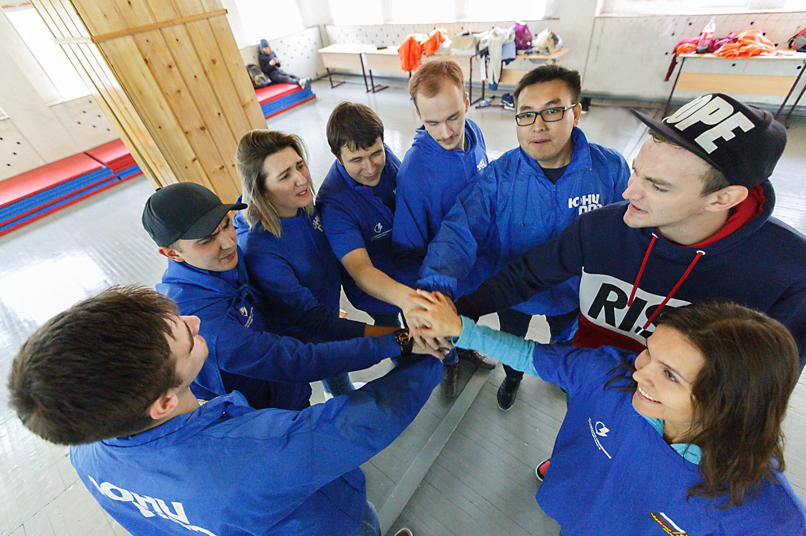
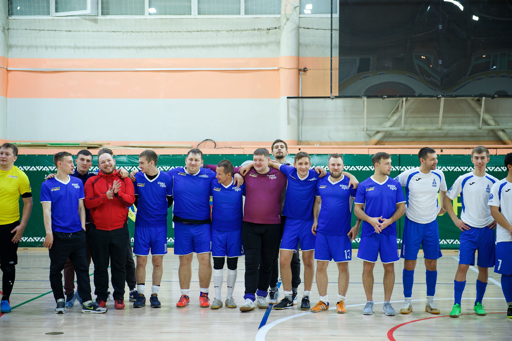

На станции успешно работает молодежное объединение. Оно способствует адаптации, личностному и карьерному росту молодежи. В его деятельность вовлечены самые активные и энергичные молодые сотрудники станции. Они участвуют в городских и региональных мероприятиях, в том числе, в фестивале рабочей молодежи «На крыло», городских спортивных соревнованиях, Всероссийском фестивале энергосбережения и экологии «#ВместеЯрче», городских экологических субботниках, мероприятиях по озеленению городских улиц, благотворительных акциях для детей.